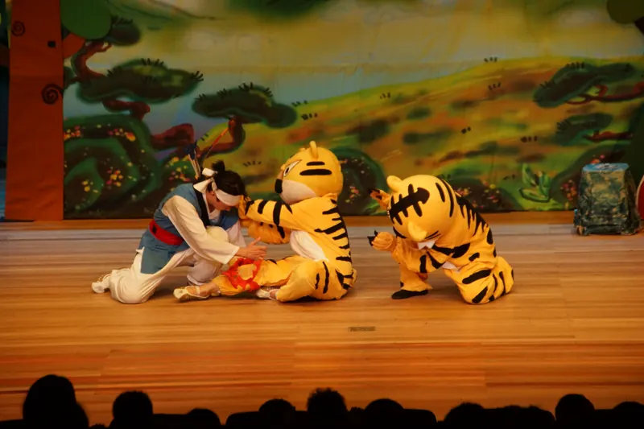
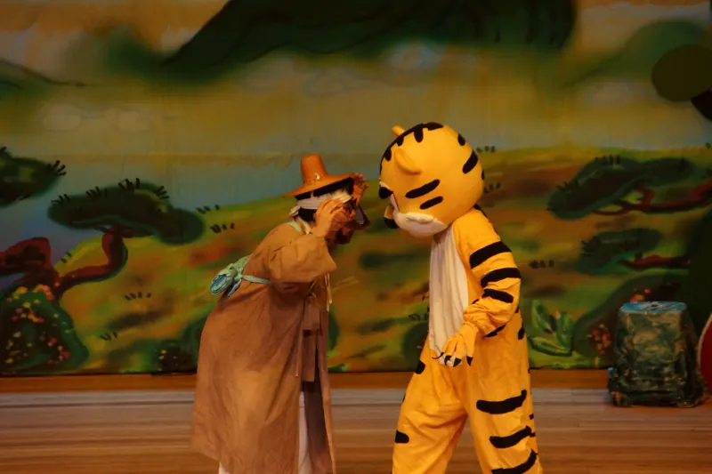
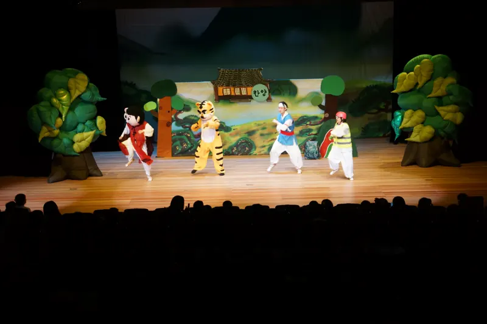
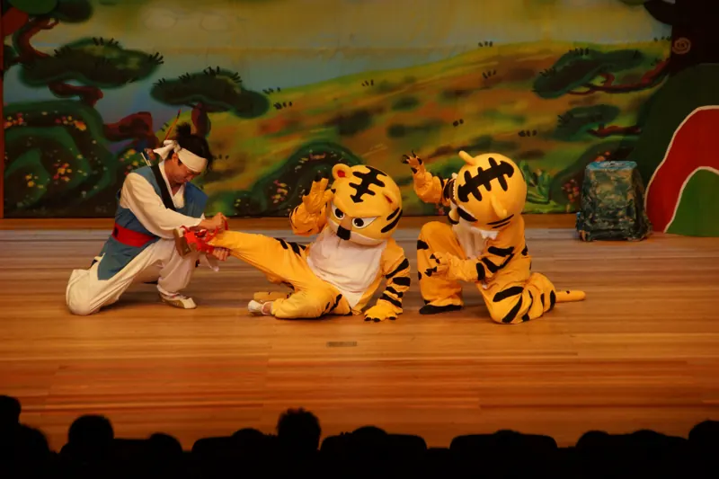

전통 놀이로 여는 무대
배우 얼씨구가 나와 흥겨운 전통 놀이로 분위기를 띄우며 이야기의 문을 엽니다.

흥겨운 전통 놀이로 문을 여는 우리 옛이야기입니다. 배우와 커다란 호랑이 캐릭터가 함께 무대에 올라, 어려움에 처한 생명을 돕는 따뜻한 마음과 받은 은혜를 잊지 않는 마음을 아이들 눈높이로 전합니다.
덫에 걸린 새끼 호랑이를 구해 주고 시험에 떨어진 젊은이, 그 은혜를 갚으려는 어미 호랑이의 이야기가 한양 장터의 소동으로 이어집니다.
배우 얼씨구가 나와 흥겨운 전통 놀이로 분위기를 띄우며 이야기의 문을 엽니다.

사람 배우와 커다란 호랑이 캐릭터가 함께 연기해 아이들이 이야기에 쏙 빠져듭니다.

징검다리 공연은 객석의 어린이들이 이야기에 함께 참여하도록 무대를 꾸밉니다.
공연이 시작되면 배우 얼씨구가 등장해 공연을 간단히 소개하고, 흥겨운 전통 놀이로 즐거운 분위기를 만들며 이야기의 문을 엽니다.

시골에서 홀어머니를 모시고 사는 젊은이가 무술 시험을 보러 길을 떠납니다. 숲속에서 만난 호랑이는 젊은이를 보고도 공격하지 않고 구슬피 울기만 하지요. 이상하게 여긴 젊은이가 호랑이를 따라가 보니, 새끼 호랑이가 덫에 걸려 울고 있었습니다.
새끼 호랑이를 구해 주던 젊은이는 잔뜩 겁먹은 새끼에게 어깨를 물립니다. 새끼 호랑이의 상처를 치료해 주고 아슬아슬하게 시험장에 도착했지만, 다친 어깨 때문에 그만 시험에 떨어지고 맙니다.
실의에 빠져 숲속을 헤매던 젊은이의 꿈에 호랑이가 나타나 말합니다. "내가 장안에 나타나 소란을 피울 테니, 그대가 나서서 나를 잡아 큰 공을 세우시오." 꿈이 하도 이상해 마을로 내려가 보니, 정말로 호랑이가 소란을 피우고 있습니다. 과연 호랑이의 운명은 어떻게 될까요?
뒷이야기는 공연에서 만나요!
주제 은혜를 아는 마음, 생명을 아끼는 마음
아동극단 징검다리
부산광역시 기장군 기장읍에 있는 아동극단입니다. 온 가족이 함께 보는 아동극과 인형극으로 어린이에게는 꿈과 희망을, 어른에게는 동심을 선물합니다.
직장어린이집·유치원·어린이집·초등학교·도서관·지역 축제로 찾아가며, 전래동화와 창작극, 안전·성폭력 예방 교육극을 공연합니다.
직장어린이집·유치원·학교·기관 어디든 찾아갑니다. 달력에서 빈 날을 골라 문의해 주세요.